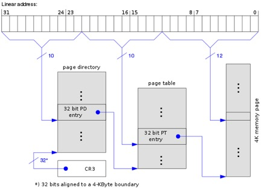
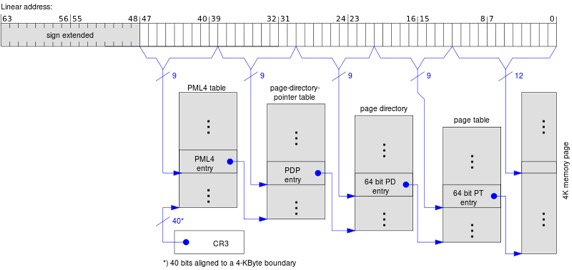
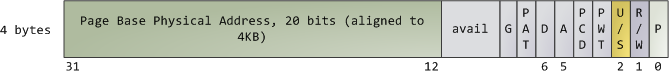

<html>
  <Head>
<meta http-equiv="Content-Type" content="text/html; charset=utf-8">

    
<link rel="stylesheet" href="../static/css/bootstrap.min.css"/>
<link rel="stylesheet" href="../static/css/bootstrap-theme.min.css"/>


    <link rel="stylesheet" href="../static/css/fonts/crmison.css"/>
    <link rel="stylesheet" href="../static/css/fonts/fira_code.css"/>
    <link rel="stylesheet" href="../static/css/fonts/ptsans.css"/>
    <link rel="stylesheet" href="../static/css/katex.min.css"/>
    <link rel="stylesheet" href="../static/css/wiki.css"/>
    <link rel="stylesheet" href="../static/css/codehilite.css"/>

    <script src="../static/js/jquery.min.js"></script>
    <script src="../static/js/bootstrap.bundle.min.js"></script>
    <script src="../static/js/katex.min.js"></script>
    
    

    <title>操作系统中的资源管理和调度</title>
  </Head>
  <body>
   
   
<nav class="navbar fixed-top navbar-expand-lg navbar-dark bg-dark">
  <a class="navbar-barnd" href="index.html">Yanyan's Wiki</a>
  <div class="collapse navbar-collapse">
    <div class="navbar-nav">
      <a class="nav-item nav-link active" href="OS2020.html">
        
        操作系统 (2020)</a>
      <a class="nav-item nav-link active" href="SysLab2020.html">
        计算机系统综合实验 (2020)</a>
      <a class="nav-item nav-link active" href="ICS_NJU.html"> 加入我们</a>
    </div>
    <form class="form-inline" autocomplete="off">
      <input id="token-input" type="text" oninput="login();" maxlength="16"
        data-toggle="tooltip" data-placement="bottom"
        title="用于确定身份的作业提交 SHA-1 hash digest。更改后回车或刷新网页生效"></input>
    </form>
  </div>
</nav>

<center>
  <div class="article-container">
    <div class="article">
      <h1 id="_1">操作系统中的资源管理和调度</h1>
<p>除了课程讲义，OSTEP的<a href="http://pages.cs.wisc.edu/~remzi/OSTEP/cpu-sched.pdf">处理器调度</a>、<a href="http://pages.cs.wisc.edu/~remzi/OSTEP/cpu-sched-mlfq.pdf">MLFQ调度</a>都是很不错的阅读内容，尤其是讲述MLFQ的角度，让你思考计算机系统策略的设计方法。关于内存管理，除了阅读busybox的代码，参考书的17-22章也是十分轻松愉快的阅读材料。</p>
<h2 id="_2">处理器资源</h2>
<p>我们在这里只谈只有一个处理器的情况。如果系统里有多个处理器——看起来很简单，如果有进程希望被调度执行而且有处理器空闲，就把进程调度就好啦。但是，首先这种所有处理器共享调度策略的实现对现在的memory hierarchy非常不友好，而且本身把在处理器A上运行的进程在B上执行，就会带来很大的cache coherence traffic。所以在深入并发部分的内容之前，我们都不会谈多处理器的管理。</p>
<h3 id="_3">操作系统眼中的进程</h3>
<p>我们知道，进程的执行可以看成是状态机的运行，而在执行有些指令的时候，会发出<strong>系统调用请求</strong>，由操作系统完成用户态不能完成的操作。其中，无论是等待其他进程、等待I/O还是等待套接字，这个进程都会进入<strong>睡眠</strong>的状态。即便我们把问题最简化(只考虑CPU一种资源，假设进程在睡眠时不占用任何资源——尽管这个假设是不合理的)。</p>
<p>那么考虑系统里的三个进程，假设你正在写代码，系统里有三个进程：</p>
<ol>
<li>(进程1) 一个不停计算的进程，比如计算<math>10^{12}</math>以内的素数个数，计算可能需要几天几夜。</li>
<li>(进程2) 编辑器进程，不停等待用户按键输入，每按一个键以后只需要1ms更新屏幕上的信息。</li>
<li>(进程3) 每隔一段时间，在接收到用户命令以后，把程序编译执行(编译执行程序需要大约1s的时间)。</li>
</ol>
<p>那我们应该如何设计一个策略，在系统的任意时刻，把CPU分配给一个能够运行的进程——不要忘记，我们的操作系统根本就不知道一个进程运行了什么程序，它到底有什么特性，无法理解我们对进程1, 2, 3的主观认识。</p>
<div class="fenced fenced-green">
<h4 id="_4">进程使用的资源</h4>
<p>进程在睡眠，不代表它不占用系统的资源。例如，进程可能向某一个设备发起了DMA的I/O请求，通过向硬件控制器，例如通知PCI总线上的设备DMA控制器，把几百MB的数据从设备送到内存中。</p>
<p>尽管从CPU的角度看，这个进程对CPU的使用非常之少，但它无疑占用了系统中的大量资源；相比另一个等待用户输入的编辑器进程(比如Atom)，哪怕实现得很烂用得CPU多一些，看起来都是后者更“重要”一些。更复杂的情况是一个进程需要等待另一个进程的输出才能继续执行，例如在同一台计算机上通过管道或套接字通信的进程。这时候想要公平地分配资源就更困难了——看似公平的调度实则可能会导致很大的麻烦。</p>
<p>完成进程使用各种资源的记账是容易的，但我们有没有可能统一调度系统中的进程呢？至少Linux目前还做不到这一点。如果你启动大量I/O密集进程，或者有进程频繁使用swap，你会非常明显感到系统出现巨大的卡顿——这毫无疑问应该是调度器没有做得完美，至少有感情的调度器应该会体恤一下用户的情感，让那些I/O密集的进程靠边站，保证用户的服务质量。</p>
</div>
<h3 id="_5">调度策略</h3>
<p>所以其实很自然地我们希望系统中的进程能公平地使用处理器资源。为了实现一个调度策略，我们先看看什么信息对我们是有用的：当然是<strong>进程被调度的历史</strong>了，例如：</p>
<ol>
<li>@1s，进程1被创建并运行。</li>
<li>@100s，进程2被创建并运行。</li>
<li>@101s，进程2调用<code>read</code>等待输入，进程1被调度运行。</li>
<li>@105s，系统中断得到输入，进程2可运行但未被调度，进程1继续运行。</li>
<li>@105.1s，时钟中断，进程2被调度运行。</li>
<li>@105.11s，进程2调用<code>read</code>等待输入，进程1被调度运行。</li>
<li>……</li>
</ol>
<p>给定所有进程被调度和状态改变的历史<math>\mathcal{H}</math>，调度策略就是一个函数<math>f(\mathcal{H})</math>，输出下一个被调度的进程。在上面这个例子中，如果在未来的某一个时间点，我们发现进程2再次可以被执行，我们就希望能立即调度它，因为从历史的角度看，进程1绝大部分时候都霸占着处理器，而进程2一直都在等外界的输入。</p>
<p>带着这个思路，你就很容易理解各个调度策略了——首先，每次都扫描完整的处理器记录是非常浪费时间、空间也不切实的，所以调度策略想方设法对历史做一个总结(例如为每个进程记录运行时间的记账信息、为进程分配优先级等等……)，然后根据历史的总结和最新发生的事件来决定应该调度哪个进程——例如Complete Fair Scheduler总是在可能的时候补偿那个获得CPU最少的进程，以实现公平的调度。</p>
<h2 id="_6">内存资源</h2>
<h3 id="_7">分页机制</h3>
<p>虚拟内存中最重要的概念是<strong>页</strong>——一段连续的内存，并且对齐到页大小的边界。页体现了内存访问的空间局部性：如果<math>x</math>被访问，则<math>x</math>附近的内存地址也将被访问。无论是栈帧(stack frame)还是一个地址紧密相连的对象，或者是数组，访问都具有非常典型的空间局部性。因此，我们的<math>VM(x)</math>并不需要维护一个字节到字节的映射——维护<math>n</math>个映射需要<math>O(n)</math>的空间，因此如果粒度过细就会造成巨大的空间浪费。</p>
<p>按照4KB来管理，32位地址空间被分为<math>2^{32} / 4096 = 2^{20}</math>页。这时候维护页面到页面的映射就可以直接通过一个长度是<math>2^{20}</math> (大小4MB)的数组<math>a</math>实现了：把虚拟地址地址<math>[2^{12}\cdot i, 2^{12}\cdot(i+1))</math>映射到<math>[2^{12}\cdot a_i, 2^{12}\cdot(a_i+1))</math>。</p>
<p>为了进一步节省内存(以及其他的好处)，x86使用了二级页表进行地址翻译：</p>
<p><center></center></p>
<p>64位系统(48位地址空间)则使用了四级页表(注意到因为页表项需要64字节，所以地址被分割成了<math>9\times4+12</math>的结构)：</p>
<p><center></center></p>
<p>这种东西显然在课堂上讲显得太蛋疼。我们重要的是要知道<strong>分页机制</strong>为我们提供了什么：把虚拟页映射到物理页的能力，以及对每个页面(甚至是一个页目录，从而是一大段内存)的访问控制：</p>
<p><center></center></p>
<p>一些常见的存储访问控制机制：</p>
<ul>
<li>NX - No eXecute (不能执行，用于提高系统安全)</li>
<li>G - 全局页面(例如内核)，用于TLB性能调优</li>
<li>D - Dirty (Modified)</li>
<li>A - Accessed (Referenced)</li>
<li>PCT/PWT - Cache-Disable / Write-Through (用于缓存控制，例如MMIO)</li>
<li>U/S - User/Supervisor 访问权限</li>
<li>R/W - Read/Write 读写权限</li>
<li>P - Present 页面是否存在</li>
</ul>
<h3 id="_8">请页调度</h3>
<p>Demand paging按照进程的实际需要管理内存，更直观的解释是“按需分配”进程所需要的内存。我们考虑以下程序(64位系统)：</p>
<div class="codehilite"><pre><span></span><span class="cp">#define N (1L &lt;&lt; 34)</span>
<span class="kt">int</span> <span class="n">a</span><span class="p">[</span><span class="n">N</span><span class="p">];</span> <span class="c1">// 64GB</span>
<span class="kt">int</span> <span class="nf">main</span><span class="p">()</span> <span class="p">{</span>
  <span class="n">printf</span><span class="p">(</span><span class="s">&quot;sizeof of a: %ld MB</span><span class="se">\n</span><span class="s">&quot;</span><span class="p">,</span> <span class="k">sizeof</span><span class="p">(</span><span class="n">a</span><span class="p">)</span> <span class="o">&gt;&gt;</span> <span class="mi">20</span><span class="p">);</span>
  <span class="n">a</span><span class="p">[</span><span class="n">N</span> <span class="o">-</span> <span class="mi">1</span><span class="p">]</span> <span class="o">=</span> <span class="mi">1</span><span class="p">;</span> <span class="n">a</span><span class="p">[</span><span class="mi">0</span><span class="p">]</span> <span class="o">=</span> <span class="mi">2</span><span class="p">;</span> 
  <span class="n">printf</span><span class="p">(</span><span class="s">&quot;sum = %d</span><span class="se">\n</span><span class="s">&quot;</span><span class="p">,</span> <span class="n">a</span><span class="p">[</span><span class="mi">0</span><span class="p">]</span> <span class="o">+</span> <span class="n">a</span><span class="p">[</span><span class="n">N</span> <span class="o">-</span> <span class="mi">1</span><span class="p">]);</span>
  <span class="k">return</span> <span class="mi">0</span><span class="p">;</span>
<span class="p">}</span>
</pre></div>


<p>这个程序实际使用的内存只是<code>a[0]</code>和<code>a[N-1]</code>。虽然程序占用的内存很大，但我们实际并不需要在进程启动时就分配那么多内存，这样可以让进程的启动变得非常迅速。</p>
<p>在进程启动后，大家通过<code>strace</code>已经观察到，加载器会使用<code>mmap</code>系统调用标记进程地址空间中的各个部分，其中数区、bss等也都是使用<code>mmap</code>标记的。但标记并不代表着内存的实际分配。我们利用分页机制，在分页机制将页面的P bit设置成<code>0</code>，暂时认为它不存在——如果未来不访问这个内存，什么事也不会发生。</p>
<p>如果进程的确访问了内存，(例如<code>a[0]</code>)，因为访问的页面不存在，因此会触发缺页异常(可以理解为主动发出的中断)，此时操作系统代码接管进程执行，首先就会查看缺页的地址到底是属于进程的哪一部分，例如：</p>
<ul>
<li>如果位于映射内核的区域，那就是非法访问。</li>
<li>如果是0(空指针)，那也是非法访问。</li>
<li>如果是一个已经映射的区域，那就要分配相应的内存。</li>
</ul>
<p>例如，缺页的地址属于bss段(一个匿名的映射区域，并且初值为0)，那操作系统就会实际分配一页全0的页面，然后更新页面的映射，然后继续执行。</p>
<p>请页调度不仅可以“按需分配”，而且还能让系统拥有比物理内存更大的内存。我们看一个比较极端的例子，下面的程序用掉了16GB的内存。但如果物理内存只有4GB怎么办呢？</p>
<div class="codehilite"><pre><span></span><span class="k">static</span> <span class="kt">uint32_t</span> <span class="n">a</span><span class="p">[</span><span class="mi">1L</span> <span class="o">&lt;&lt;</span> <span class="mi">32</span><span class="p">];</span> <span class="c1">// 16GB</span>
<span class="n">a</span><span class="p">[</span><span class="mi">0</span><span class="p">]</span> <span class="o">=</span> <span class="n">a</span><span class="p">[</span><span class="mi">1</span><span class="p">]</span> <span class="o">=</span> <span class="mi">1</span><span class="p">;</span>
<span class="k">for</span> <span class="p">(</span><span class="kt">int</span> <span class="n">i</span> <span class="o">=</span> <span class="mi">2</span><span class="p">;</span> <span class="n">i</span> <span class="o">&lt;</span> <span class="p">(</span><span class="mi">1L</span> <span class="o">&lt;&lt;</span> <span class="mi">32</span><span class="p">);</span> <span class="n">i</span><span class="o">++</span><span class="p">)</span> <span class="p">{</span>
  <span class="n">a</span><span class="p">[</span><span class="n">i</span><span class="p">]</span> <span class="o">=</span> <span class="p">(</span><span class="n">a</span><span class="p">[</span><span class="n">i</span> <span class="o">-</span> <span class="mi">1</span><span class="p">]</span> <span class="o">+</span> <span class="n">a</span><span class="p">[</span><span class="n">i</span> <span class="o">-</span> <span class="mi">2</span><span class="p">])</span> <span class="o">%</span> <span class="mi">1000000007</span><span class="p">;</span>
<span class="p">}</span>
</pre></div>


<p>在这个程序里，访问过的页面一旦被计算完毕，就<strong>不会再访问</strong>了，所以如果我们有更大的存储设备(或者网络上其他机器还有内存)，例如SSD，就可以把这些内存暂时腾挪到其他地方，然后腾出的空间可以分配新的页面——当内存空间紧张时，我们可以把已经分配的一些页面移动到其他存储介质，从而腾出更多的空间。同理，如果系统中有很多进程，也可以让它们实际使用的内存超过物理内存的上限。这在早期计算机内存非常宝贵的时候是非常重要的特性。</p>
<div class="fenced fenced-green">
<h4 id="_9">好事总是带来麻烦</h4>
<p>如果我们允许把页面换出去，那带来的麻烦就是我们缺页的时候，不仅要在内存映射表里看看它到底属于哪里，还要看它是不是已经被换出去了——如果已经被换出去，就必须从存储介质里把它取回来。</p>
<p>这个机制如何高效地实现？提示：在页表项P = 0的前提下，页表项的前31位都是可用的。</p>
</div>
<p>于是我们可以提出一万种算法来优化请页调度策略。最常见的就是已经讲了一万遍的最近最少用(LRU)策略。以及如果我们能够准确地预测未来，我们甚至可以得到请页调度的最优算法——每次总是换出那个未来最晚使用的一页。</p>
<p>但现实是非常残酷的：得到访问的历史、预测访问的未来是代价极大的事情。计算机硬件寸土寸金，根本不可能为我们提供大量的信息来实现各种复杂的算法。参考书中<a href="http://pages.cs.wisc.edu/~remzi/OSTEP/vm-beyondphys-policy.pdf">请页调度策略的实现</a>值得一读，但我们也希望你能更多地想一想，如果是你，你会怎么实现？</p>
<div class="fenced fenced-green">
<h4 id="crazy-ideas">Crazy Ideas</h4>
<p>如果我们有硬件(比如FPGA)能不断监控进程内存的访问，那我们就能对进程未来的访问模式做出更好的预测，而不是使用LRU这样的启发式算法：大不了我们可以拿个神经网络来预测未来访问/不访问的页面嘛。</p>
<p>这些ideas也许现在看起来很疯狂——我们在实现请页调度策略的时候都要绞尽脑汁想方设法去用好硬件里的那些1bit的信息。但有什么不能成为现实的呢？就像当年的RISC一样。嗯——如果我们能在CPU附近装上一些可编程的器件，哪怕跟不上CPU的速度，只能获得部分profiling信息，这带来的影响都是非常巨大的。</p>
</div>
<h3 id="_10">写时复制</h3>
<p>最后，分页机制还能用来实现高效的<code>fork</code>。实现<code>fork</code>还是有点麻烦的：父子进程拥有完全独立的地址空间：</p>
<div class="codehilite"><pre><span></span><span class="kt">int</span> <span class="n">x</span> <span class="o">=</span> <span class="mi">0</span><span class="p">,</span> <span class="n">pid</span> <span class="o">=</span> <span class="n">fork</span><span class="p">();</span>
<span class="k">if</span> <span class="p">(</span><span class="n">pid</span> <span class="o">==</span> <span class="mi">0</span><span class="p">)</span> <span class="p">{</span>
  <span class="n">assert</span><span class="p">(</span><span class="n">x</span> <span class="o">==</span> <span class="mi">0</span><span class="p">);</span>
<span class="p">}</span> <span class="k">else</span> <span class="p">{</span>
  <span class="n">x</span> <span class="o">=</span> <span class="mi">1</span><span class="p">;</span>
<span class="p">}</span>
</pre></div>


<p>无论父/子进程按照何种顺序执行，assert都必须成立。</p>
<p>再进一步分析这个问题，如果父、子进程都不再执行任何内存的写操作，<code>fork</code>就非常容易实现了——我们只需要让两个进程都共享同一份页表，反正没有人会写入，读到的数据总是对的。</p>
<p>那如果有人要写入怎么办呢——好办。我们只需要用分页机制中为我们提供的Write Bit来禁止大家写入就行。在x86中，我们只需要把共享页表的页目录设置成只读就行了。每当写操作发生时(无论是父或子进程)，都会导致缺页异常(x86是#14 page fault)。此时只需将这一页复制一份，就得到了两个进程分别的拷贝，各自都可以写入了，而其他页面仍然处于共享的状态。</p>
<p>这事情说得轻巧，但实现起来远没有那么容易，因为资源是需要分配和释放的，而copy-on-write给资源的管理带来了很大的挑战。</p>
<div class="fenced fenced-green">
<h4 id="copy-on-write">Copy-on-Write的实现</h4>
<p>我们可以fork()出100个进程。这100个进程都会写入变量<code>x</code>，前99次写时，都应该复制一页，但第100次写时，因为剩下只有唯一的进程，因此并不需要复制，而是直接设置为可写就行了。</p>
<p>所以我们需要维护每一页被共享的<strong>次数</strong>。这件事说来简单，做起来可就难了——如果我把一个1,000,000页的进程复制(也就4GB内存，在生产环境里这根本不算什么)，我难道要把1,000,000个页的引用计数都+1？而且因为mmap的存在，进程之间可能有着非常复杂的页面共享关系。</p>
<p>答案在Linux Kernel的<code>mm/memory.c</code>文件。如果你觉得比较迷茫，可以从<code>kernel/fork.c</code>中的<code>copy_mm</code>看起。最后你会发现，现实也许远没有你想得那么美好——子进程使用的内存每增加一倍，fork的运行时间就要增加一倍多。</p>
</div>
<p>无论如何，copy-on-write都是计算机系统中非常重要的手段，我们将会在并发、文件系统等很多地方看到它的影子。</p>
    </div>
  </div>
</center>

<div class="footer-bottom">
  <center>
    <div class="copyright"> © 2020 Yanyan Jiang, All rights reserved </div>
  </center>
</div>


    <script>
      $(function () {
        $('[data-toggle="tooltip"]').tooltip()
      })

      $("math").each(function() {
        var tex = $(this).text();
        var html = katex.renderToString(tex, {
          displayMode: $(this).attr('class') == 'block-math',
          throwOnError: false
        });
        $(this).replaceWith(html);
      });

      function get_token() {
        var match = document.cookie.match(new RegExp('(^| )token=([^;]+)'));
        if (match) return match[2];
        else return "";
      }

      var token = get_token();
      var hint = "token", box = $("#token-input");

      if (token == "") { box.val(hint); }
      else { box.val(token); }

      function login() {
        var token = box.val()
        document.cookie = 'token=' + token + '; expires=Fri, 31 Dec 9999 23:59:59 GMT;';
        if (token == '') {
          box.val(hint);
        }
      }
    </script>
  </body>
</html>